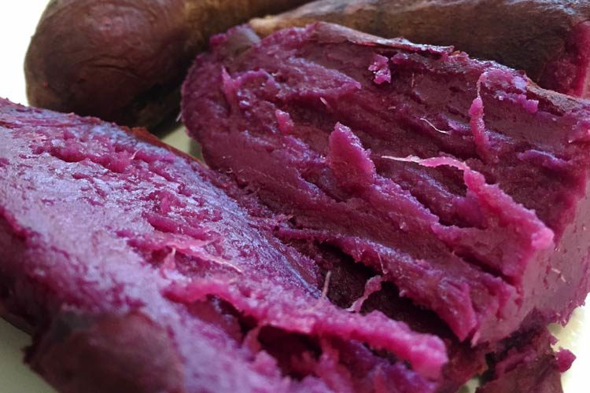
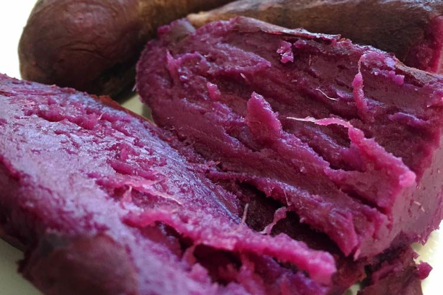

Sweet, Purple, and Potato!
Ingredients
- Purple Sweet Potato
- 2 Tbs Butter
- salt
- black pepper
Instructions
- Pre-heat oven to 425F
- Wash Potatoes
- Stab Potatoes
- Bake potatoes on baking sheet until soft
- Add butter, seasoning, anything you want!
Sweet, Purple, and Potato!
